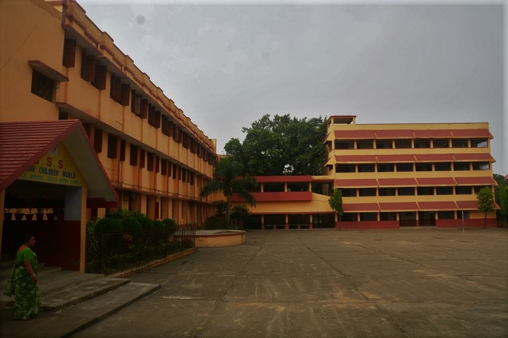

Trishul Utsav
Each year on 29th January, we celebrate Trishul Utsav, which is the biggest festival in our school. Trishul Utsav is celebrated in the month of Poush (between mid-December and mid-January). The Trishul Utsav which marks the birth anniversary of Swami Pranavananda